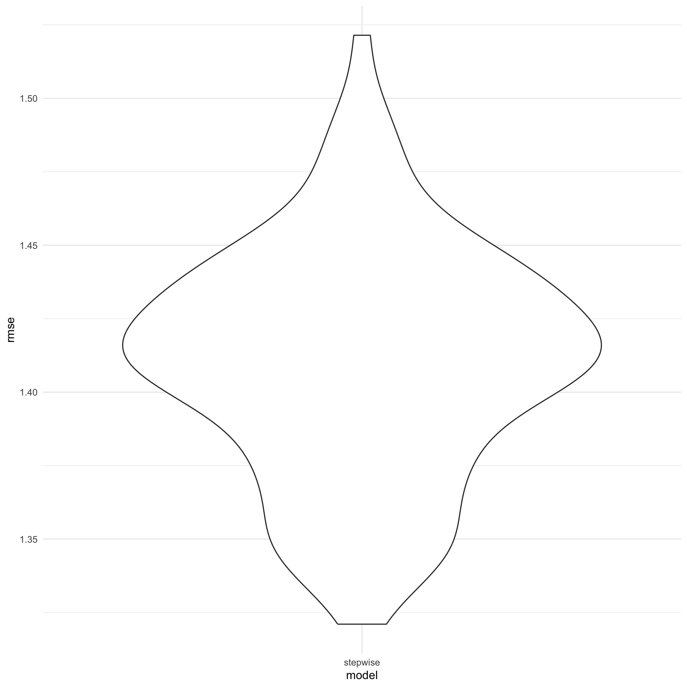

Regression Analysis 2
Import Datasets
First, we import data and filter homeless people and only focus on
the Demographic “Payer”. Then we change several variables into factors
and tidy the data. Explanation for factor variables:
LicensedBedSize: 1 = “1-99”, 2 = “100-199”, 3 = “200-299”, 4 =
“300-399”, 5 = “400+”
Ownership: 1 = “Investor”, 2 = “Non-Profit”, 3 = “Government”
EncounterType:1 = “ED Visits”, 0 = “Inpatient Hospitalizations”
Urban_Rural: 1 = “Rural/Frontier”, 0 = “Urban”
Teaching: 1 = “Teaching”, 0 = “Non-Teaching”
PrimaryCareShortageArea: 1 = “Yes”, 0 = “No”
MentalHealthShortageArea: 1 = “Yes”, 0 = “No”
Payer: 1 = “Medi-Cal”, 2 = “Medicare”, 3 = “Other Payer”, 4 = “Private
Coverage”, 5 = “Uninsured”
dat <- read.csv("2019-2020-homeless-ip-and-ed-by-facility.csv") |>
filter(HomelessIndicator == "Homeless" & Demographic == "Payer")
dat_clean <- dat |>
dplyr::select(HomelessIndicator,Ownership, Urban_Rural, Teaching, EncounterType, LicensedBedSize, PrimaryCareShortageArea,
MentalHealthShortageArea, DemographicValue, Encounters) |>
mutate(LicensedBedSize = match(LicensedBedSize,c("1-99","100-199","200-299","300-399","400+")),
Ownership = match(Ownership, c("Investor", "Non-Profit", "Government")),
EncounterType = ifelse(EncounterType == "ED Visits",1,0),
Urban_Rural = ifelse(Urban_Rural == "Rural/Frontier",1,0),
Teaching = ifelse(Teaching == "Teaching",1,0),
PrimaryCareShortageArea = ifelse(PrimaryCareShortageArea == "Yes",1,0),
MentalHealthShortageArea = ifelse(MentalHealthShortageArea == "Yes",1,0),
Payer = match(DemographicValue, c("Medi-Cal", "Medicare", "Other Payer", "Private Coverage", "Uninsured"))
)|>
mutate(across(-Encounters, as.factor)) |>
dplyr::select(-DemographicValue,-HomelessIndicator) |>
janitor::clean_names()
summary(dat_clean)## ownership urban_rural teaching encounter_type licensed_bed_size
## 1:1160 0:2975 0:3360 0:2095 1:1060
## 2:1910 1: 695 1: 310 1:1575 2:1045
## 3: 600 3: 630
## 4: 500
## 5: 435
##
## primary_care_shortage_area mental_health_shortage_area encounters
## 0:2640 0:2275 Min. : 0.0
## 1:1030 1:1395 1st Qu.: 4.0
## Median : 30.0
## Mean : 244.2
## 3rd Qu.: 173.0
## Max. :17485.0
## payer
## 1:734
## 2:734
## 3:734
## 4:734
## 5:734
## library(ggplot2)
# Histogram
ggplot(dat_clean, aes(x = encounters)) +
geom_histogram(binwidth = 1, fill = "blue", color = "black", alpha = 0.7) +
labs(title = "Histogram of encounters", x = "encounters", y = "Frequency")
# Kernel Density Plot
ggplot(dat_clean, aes(x = log(encounters))) +
geom_density(fill = "blue", alpha = 0.7) +
labs(title = "Kernel Density Plot of log(encounters)", x = "log(encounters)", y = "Density")Then we consider a model with the main effects of all variables and then use stepwise regression to select appropriate variables
Method
Multiple Linear Regression:
Multiple Linear Regression (MLR) is a statistical technique that extends the concept of simple linear regression to analyze the relationship between multiple independent variables and a dependent variable. In MLR, the model is represented as:
MLR allows us to assess the individual and collective impact of each independent variable on the dependent variable, providing valuable insights into the underlying relationships within the data. Assumptions, such as linearity, independence, homoscedasticity, and normality of residuals, are crucial for the validity of MLR results.
Stepwise Regression:
Stepwise Regression is a variable selection technique used in the context of multiple regression analysis. It systematically selects a subset of independent variables from a larger set, either by adding or removing variables based on specific criteria. There are two main types of stepwise regression: forward selection and backward elimination.
Backward Elimination: Beginning with a model that includes all variables, backward elimination removes variables one at a time, excluding the variable that contributes the least to the model’s explanatory power. The process continues until no more variables meet the exclusion criteria.
Stepwise Regression is employed to streamline the model by selecting the most influential variables while minimizing overfitting.
# full model
model_all <- lm(log1p(encounters) ~ ., data = dat_clean)
# stepwise regression
model_stepwise <- step(model_all, direction = "backward")## Start: AIC=2574.02
## log1p(encounters) ~ ownership + urban_rural + teaching + encounter_type +
## licensed_bed_size + primary_care_shortage_area + mental_health_shortage_area +
## payer
##
## Df Sum of Sq RSS AIC
## <none> 7336.3 2574.0
## - ownership 2 17.9 7354.3 2579.0
## - primary_care_shortage_area 1 20.3 7356.6 2582.2
## - mental_health_shortage_area 1 37.5 7373.8 2590.7
## - teaching 1 56.9 7393.3 2600.4
## - urban_rural 1 179.1 7515.5 2660.6
## - licensed_bed_size 4 1192.0 8528.3 3118.5
## - encounter_type 1 1766.6 9102.9 3363.8
## - payer 4 5182.5 12518.8 4527.2model_all |>
broom::tidy() |>
knitr::kable(digits = 3)| term | estimate | std.error | statistic | p.value |
|---|---|---|---|---|
| (Intercept) | 3.591 | 0.080 | 44.829 | 0.000 |
| ownership2 | 0.101 | 0.057 | 1.788 | 0.074 |
| ownership3 | 0.233 | 0.078 | 2.968 | 0.003 |
| urban_rural1 | -0.780 | 0.083 | -9.446 | 0.000 |
| teaching1 | 0.502 | 0.094 | 5.324 | 0.000 |
| encounter_type1 | 1.432 | 0.048 | 29.663 | 0.000 |
| licensed_bed_size2 | 1.057 | 0.067 | 15.883 | 0.000 |
| licensed_bed_size3 | 1.534 | 0.080 | 19.120 | 0.000 |
| licensed_bed_size4 | 1.645 | 0.087 | 18.960 | 0.000 |
| licensed_bed_size5 | 1.971 | 0.097 | 20.331 | 0.000 |
| primary_care_shortage_area1 | -0.203 | 0.064 | -3.179 | 0.001 |
| mental_health_shortage_area1 | 0.250 | 0.058 | 4.322 | 0.000 |
| payer2 | -1.087 | 0.074 | -14.702 | 0.000 |
| payer3 | -3.410 | 0.074 | -46.107 | 0.000 |
| payer4 | -2.625 | 0.074 | -35.496 | 0.000 |
| payer5 | -2.005 | 0.074 | -27.102 | 0.000 |
summary(model_stepwise)##
## Call:
## lm(formula = log1p(encounters) ~ ownership + urban_rural + teaching +
## encounter_type + licensed_bed_size + primary_care_shortage_area +
## mental_health_shortage_area + payer, data = dat_clean)
##
## Residuals:
## Min 1Q Median 3Q Max
## -5.6810 -0.8807 0.0660 0.9048 6.7071
##
## Coefficients:
## Estimate Std. Error t value Pr(>|t|)
## (Intercept) 3.59062 0.08010 44.829 < 2e-16 ***
## ownership2 0.10131 0.05667 1.788 0.07393 .
## ownership3 0.23262 0.07837 2.968 0.00301 **
## urban_rural1 -0.77979 0.08255 -9.446 < 2e-16 ***
## teaching1 0.50162 0.09422 5.324 1.08e-07 ***
## encounter_type1 1.43189 0.04827 29.663 < 2e-16 ***
## licensed_bed_size2 1.05692 0.06655 15.883 < 2e-16 ***
## licensed_bed_size3 1.53428 0.08024 19.120 < 2e-16 ***
## licensed_bed_size4 1.64461 0.08674 18.960 < 2e-16 ***
## licensed_bed_size5 1.97100 0.09695 20.331 < 2e-16 ***
## primary_care_shortage_area1 -0.20317 0.06391 -3.179 0.00149 **
## mental_health_shortage_area1 0.24962 0.05775 4.322 1.59e-05 ***
## payer2 -1.08744 0.07396 -14.702 < 2e-16 ***
## payer3 -3.41026 0.07396 -46.107 < 2e-16 ***
## payer4 -2.62546 0.07396 -35.496 < 2e-16 ***
## payer5 -2.00456 0.07396 -27.102 < 2e-16 ***
## ---
## Signif. codes: 0 '***' 0.001 '**' 0.01 '*' 0.05 '.' 0.1 ' ' 1
##
## Residual standard error: 1.417 on 3654 degrees of freedom
## Multiple R-squared: 0.5929, Adjusted R-squared: 0.5912
## F-statistic: 354.8 on 15 and 3654 DF, p-value: < 2.2e-16model_stepwise |>
broom::tidy() |>
knitr::kable(digits = 3)| term | estimate | std.error | statistic | p.value |
|---|---|---|---|---|
| (Intercept) | 3.591 | 0.080 | 44.829 | 0.000 |
| ownership2 | 0.101 | 0.057 | 1.788 | 0.074 |
| ownership3 | 0.233 | 0.078 | 2.968 | 0.003 |
| urban_rural1 | -0.780 | 0.083 | -9.446 | 0.000 |
| teaching1 | 0.502 | 0.094 | 5.324 | 0.000 |
| encounter_type1 | 1.432 | 0.048 | 29.663 | 0.000 |
| licensed_bed_size2 | 1.057 | 0.067 | 15.883 | 0.000 |
| licensed_bed_size3 | 1.534 | 0.080 | 19.120 | 0.000 |
| licensed_bed_size4 | 1.645 | 0.087 | 18.960 | 0.000 |
| licensed_bed_size5 | 1.971 | 0.097 | 20.331 | 0.000 |
| primary_care_shortage_area1 | -0.203 | 0.064 | -3.179 | 0.001 |
| mental_health_shortage_area1 | 0.250 | 0.058 | 4.322 | 0.000 |
| payer2 | -1.087 | 0.074 | -14.702 | 0.000 |
| payer3 | -3.410 | 0.074 | -46.107 | 0.000 |
| payer4 | -2.625 | 0.074 | -35.496 | 0.000 |
| payer5 | -2.005 | 0.074 | -27.102 | 0.000 |
The stepwise regression model indicates that all variables that are important, the p-value of the model is < 2.2e-16, and Adjusted R-squared is 0.5912, which means approximately 59.12% of the variability in the log-transformed encounters can be explained by the predictor variables in your model.
- Licensed Bed Size:
The estimated coefficients (1.057, 1.534, 1.645, 1.971) indicate the change in log-transformed encounters associated with different licensed bed sizes. All coefficients are positive and statistically significant, suggesting that larger bed sizes are associated with higher log-transformed encounters.
- Ownership:
The estimated coefficients (0.101, 0.233) represent the change in
log-transformed encounters associated with different ownership
types.
Interpreting each level:
“Non-Profit” (2): +0.101 (not statistically significant)
“Government” (3): +0.233 (statistically significant)
“Investor” is the reference category.
The “Government” ownership type is associated with a statistically
significant increase in log-transformed encounters.
- Encounter Type:
The estimated coefficient (1.432) indicates the change in
log-transformed encounters associated with “ED Visits” compared to
“Inpatient Hospitalizations.”
“ED Visits” (1): +1.432
“Inpatient Hospitalizations” (0) is the reference category.
“ED Visits” are associated with a statistically significant increase in
log-transformed encounters.
- Urban/Rural:
The estimated coefficient (-0.780) represents being in a “Rural/Frontier” area is associated with a statistically significant decrease in log-transformed encounters.
- Teaching:
The estimated coefficient (0.502) represents the change in log-transformed encounters associated with being in a “Teaching” environment compared to a “Non-Teaching” environment. Being in a “Teaching” environment is associated with a statistically significant increase in log-transformed encounters.
- Primary Care Shortage Area:
The estimated coefficient (-0.203) represents the change in log-transformed encounters associated with being in a “Primary Care Shortage Area” compared to a “Non-Shortage Area.” Being in a “Primary Care Shortage Area” is associated with a statistically significant decrease in log-transformed encounters.
- Mental Health Shortage Area:
The estimated coefficient (0.250) represents the change in log-transformed encounters associated with being in a “Mental Health Shortage Area” compared to a “Non-Shortage Area.” Being in a “Mental Health Shortage Area” is associated with a statistically significant increase in log-transformed encounters.
- Payer:
The estimated coefficients (-1.087, -3.410, -2.625, -2.005) represent the change in log-transformed encounters associated with different payer types compared to “Medi-Cal.” All coefficients are negative and statistically significant, suggesting that compared to “Medi-Cal,” other payer types are associated with a decrease in log-transformed encounters.
Variance Inflation Factor (VIF)
The Variance Inflation Factor (VIF) is a common indicator used to detect multicollinearity in regression models. A higher VIF value indicates that the corresponding independent variable is more likely to be influenced by other independent variables. Typically, VIF values exceeding 10 or 20 are considered indicative of the presence of multicollinearity.
library(car)
vif_values <- vif(model_stepwise)
print(vif_values)## GVIF Df GVIF^(1/(2*Df))
## ownership 1.325356 2 1.072959
## urban_rural 1.912280 1 1.382852
## teaching 1.254805 1 1.120181
## encounter_type 1.043487 1 1.021512
## licensed_bed_size 1.804525 4 1.076578
## primary_care_shortage_area 1.507205 1 1.227683
## mental_health_shortage_area 1.436653 1 1.198605
## payer 1.000000 4 1.000000# The result is no multicollinearity.We show a plot of model residuals against fitted values.
library(modelr)
dat_clean %>%
add_predictions(model_stepwise) %>%
add_residuals(model_stepwise) %>%
ggplot(aes(x = pred, y = resid)) +
geom_point() +
geom_smooth(method = "lm") +
labs(title = "Model residuals against fitted values",
x = "Predicted values",
y = "Residuals") +
theme_minimal()## `geom_smooth()` using formula
## = 'y ~ x'We observe a plot of model residuals against fitted values in regression analysis and notice that the slope is close to zero, it suggests that there is homoscedasticity in the residuals. Homoscedasticity means that the variability of the residuals (or errors) is approximately constant across all levels of the independent variable(s) or across the range of predicted values, which is a desirable assumption in regression analysis.
Cross validation
In cross-validation, the root mean squared error (RMSE) is a measure of the average magnitude of prediction errors made by a model. A lower RMSE indicates that the model has better predictive accuracy, as it means the model’s predictions are closer to the true values.
cv_df =
crossv_mc(dat_clean, 100)
cv_df <- cv_df |>
mutate(train = map(train, as_tibble),
test = map(test, as_tibble)) |>
mutate(
stepwise_mod = map(train, ~model_stepwise)) |>
mutate(
rmse_stepwise = map2_dbl(stepwise_mod, test, \(mod, df) rmse(model = mod, data = df)))
cv_df |>
dplyr::select(starts_with("rmse")) |>
pivot_longer(
everything(),
names_to = "model",
values_to = "rmse",
names_prefix = "rmse_") |>
mutate(model = fct_inorder(model)) |>
ggplot(aes(x = model, y = rmse)) + geom_violin() +
theme_minimal() From the violin plot, we can know that the stepwise regression model has relative low rmse, approximately 1.43, which means the model has better predictive accuracy